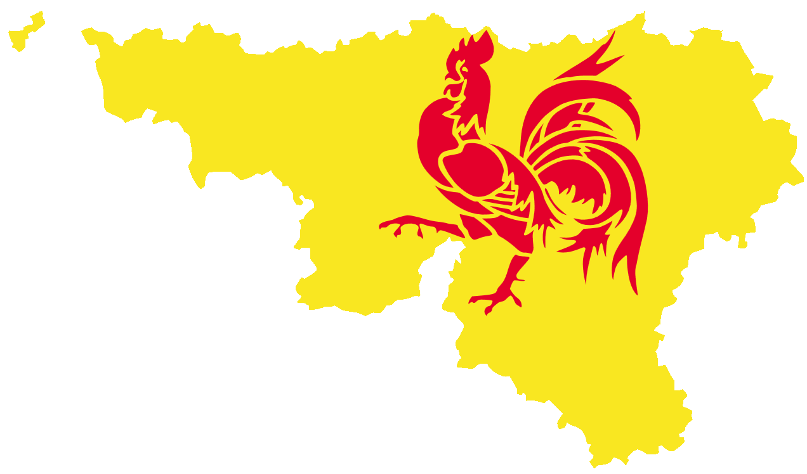

Pourquoi cette association ?
L'association a été créée au début du siècle suite à deux constats :
- En Wallonie, la situation de la langue allemande dans l'enseignement et dans le secteur économique est très différente de celle de la Flandre et de la Région bruxelloise. Il faut donc des stratégies spécifiques pour la promouvoir.
- Le territoire de langue allemande fait partie intégrante de la Région wallonne qui est, dès lors, officiellement bilingue.
Quelques exemples de réalisations :
- Diffusion d'informations sur l'importance de la langue allemande en Belgique, en Europe et dans le monde;
- Contacts avec les écoles et les associations de parents;
- Lobbying auprès des décideurs politiques;
- Concours dans les écoles;
- Création, avec le concours du Parlement et du Gouvernement de Wallonie, d'une « Journée de la langue allemande » (troisième mercredi du mois d'octobre);
- Articles en allemand dans la revue Vivre la Wallonie;
- Création, dans les dix « Maisons de Wallonie » de stands où le public peut s'informer sur la Communauté germanophone et sur l'importance de la langue allemande.
Contact: manfred.peters@unamur.be ou apaw.namur@gmail.com
